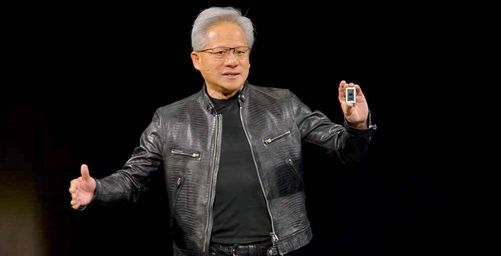

Nvidia Board Prepares to Oust Jensen Huang After Second Affair Report
The Wall Street Journal reported on November 11, 2026 that Nvidia's board is preparing to oust founder and chief executive Jensen Huang, with a board meeting expected as soon as Wednesday to determine his future. The report followed a New York Times report the same day that Huang had a relationship with Kimberly Powell, Nvidia's vice president of health care, who reports to him, captured on video at a San Jose hotel in March 2026. The board opened an independent investigation on November 8 into reports Huang was targeted by a foreign intelligence effort; three House chairs want a closed-door briefing on November 18, with a response deadline of November 11. Shares fell about 8% in after-hours trading; no final decision has been announced.

- 01THE REPORT — The Wall Street Journal reported on November 11, 2026 that Nvidia's board is preparing to oust founder and chief executive Jensen Huang, with a board meeting expected as soon as Wednesday to determine his future, after reports of two extramarital affairs.
- 02THE CONTEXT — The New York Times reported the same day that Huang had a relationship with Kimberly Powell, Nvidia's vice president of health care, who reports to him; the board opened an independent investigation on November 8 into reports Huang was targeted by a foreign intelligence effort, and three House chairs want a closed-door briefing on November 18.
- 03THE WATCHPOINT — Whether the board removes Huang before its investigation concludes, whether Huang responds to the House briefing request by the November 11 deadline, and what the November 17 earnings call brings.
WHAT HAPPENEDWhat Happened
Nvidia's board of directors is preparing to oust founder and chief executive Jensen Huang, the Wall Street Journal reported on Wednesday, November 11, 2026, citing people familiar with the matter. The board was preparing to meet as soon as Wednesday to determine Huang's future, days after it opened an independent investigation into reports that Huang was the target of a foreign intelligence effort. No final decision has been announced, and Huang has not been removed as chief executive.
The Journal's report landed minutes after the New York Times reported that Huang had a second extramarital relationship, this time with Kimberly Powell, Nvidia's vice president of health care, who reports to him. The Times, citing five people who worked at Nvidia, said the pair were captured on video being affectionate at a hotel in San Jose, California, during an Nvidia conference in March 2026. Such a relationship with a direct report is barred under Nvidia's corporate policy. Nvidia declined to comment to the Times, and Powell did not immediately respond.
The crisis began on November 8, when Huang acknowledged in a memo to staff that he had been unfaithful to his wife, following reports of an affair with Alice Huang, a former executive at Singapore-based Megaspeed whom U.S. intelligence officials believe works for China's Ministry of State Security. The board opened an independent investigation the same day and hired the law firm Wachtell, Lipton, Rosen & Katz, with former acting U.S. attorney Joon H. Kim leading the work. Three House committee chairs have asked Huang to attend a closed-door briefing on November 18 about the matter, with a deadline to respond by November 11; no public response had been reported as of this writing. Senator Kevin Cramer has called on Huang to step down.
WHY IT MATTERSA governance crisis three days before earnings
The timing turns a personal conduct crisis into a market event. Nvidia reports third-quarter earnings on November 17, the day before the requested House briefing, and the world's most valuable chipmaker has no publicly named successor. The board's own investigation was meant to buy time and establish facts; the second affair report collapsed that timeline, and the Journal's account of a board preparing an ouster shows directors now weighing whether Huang can keep leading while the probe runs.
The distinction that matters is between preparation and decision. The board has not announced a removal, and the Journal's sourcing describes a meeting to determine Huang's future, not a vote already taken. But the market read the direction of travel: Nvidia shares fell about 8% in after-hours trading, while rivals AMD and Broadcom rose 4% and 3% respectively. A founder-CEO removal at this scale would be one of the largest leadership shocks in the history of the chip industry.
WHAT TO WATCHThe briefing deadline and the investigation are now on separate tracks
Two clocks are running. The House deadline for Huang to accept the November 18 briefing or propose another date expires November 11, and Foreign Affairs Chairman Brian Mast has said he would subpoena Huang if he does not respond. A subpoena, a response, or silence each change the story in a different direction, and none had been reported publicly as of this writing.
The other clock is the board's. The independent investigation led by Wachtell was opened to examine whether Huang was targeted by a foreign intelligence operation and whether company secrets were compromised; the board has said it found no evidence of compromise so far. The question now is whether the board finishes that inquiry before deciding Huang's future, or acts first and lets the investigation run on. Either way, the next board statement, and the November 17 earnings call, are the two moments that will settle what the reports only suggest.
SIGNAL JUDGMENT — ANALYSISPreparation is not a decision, but the market has already priced the direction
Tokenta Signal's judgment: The story to watch is the board's, not the tabloid detail. A founder-CEO removal at the world's most valuable chipmaker, three days before earnings and a week before a requested congressional briefing, would be a leadership shock with no ready successor in public view. The honest reading is that the Journal reports preparation, not a vote, and the board may still finish its investigation before acting. But the after-hours drop shows investors are no longer treating Huang's tenure as settled, and the next board statement will matter more than any single report. Until then, the facts are the reports themselves, and the ouster is reported, not done.
WHAT REMAINS UNCERTAINWhat Remains Uncertain
EVIDENCEEvidence
Reuters' confirmation of the Wall Street Journal report, read in full: Nvidia's board is preparing to oust chief executive Jensen Huang after he had two extramarital affairs, including one with a suspected Chinese spy, and the board is preparing to meet as soon as Wednesday to determine his future. Earlier in the day the New York Times reported Huang had an affair with Kimberly Powell, Nvidia's vice president of health care, who reports to him. Nvidia did not immediately respond to a request for comment, and shares were down about 8% in after-hours trading.
PRIMARY SOURCESPrimary Sources
- Reuters: Nvidia is preparing to oust CEO Jensen Huang, WSJ reports
https://www.reuters.com/technology/nvidia-is-preparing-oust-ceo-jensen-huang-wsj-reports-2026-11-11/ - MarketWatch: Nvidia's stock drops as the board reportedly prepares to remove CEO Jensen Huang
https://www.marketwatch.com/story/nvidias-stock-drops-as-the-board-reportedly-prepares-to-remove-ceo-jensen-huang-9edee58d - Investor's Business Daily: Nvidia Stock Tumbles As CEO Jensen Huang Had Second Affair, NYT Reports
https://www.investors.com/news/technology/nvidia-stock-ceo-jensen-huang-second-affair-nyt-report/